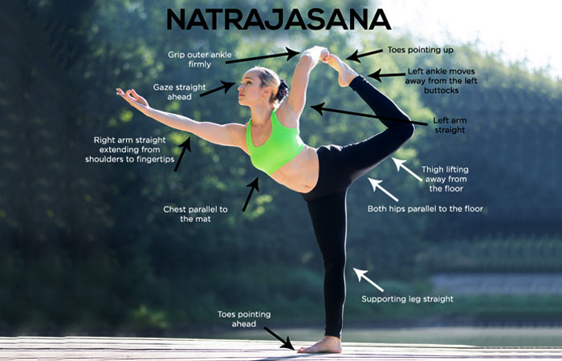

How To Do Natarajasana
- To begin with, stand in the Tadasana
- Breathe in, and lift your left foot, such that the heel is placed towards the left buttock and your knees are bent. Your entire body weight must be placed on your right foot.
- Then, push the ball of the right thigh bone into the hip joint, and pull the kneecap up so that your standing leg is strong and straight.
- Keep your torso upright. Grasp the left foot from the outside with the left hand. You must make sure your lower back is not compressed. So, make sure your pubis is lifted towards your navel. And as you do that, press your tailbone to the floor.
- Begin to lift your left foot up, away from the floor and back, away from your torso. Extend the left thigh behind you and parallel to the floor. Your right arm must be stretched forward, such that it is parallel to the floor.
- Hold this pose for about 15 to 30 seconds. Release, and repeat on the other side.

Benefits Of The Natarajasana :
- Avoid this asana at all costs if you have low blood pressure.
- You could ask your instructor to help you gain balance when you begin practicing this asana. It is best that you consult a doctor before you do this asana.
Caution:
- Practicing this asana gives strength to your chest, ankles, hips, and legs.
- This asana increases your metabolism and helps in weight loss.
- It gives your groin, abdominal organs, and thighs a good stretch.
- Your posture is improved, and balance is increased.
- It helps better your digestion.
- You tend to focus more and are also relieved of stress. This asana calms your mind.
- Your body becomes flexible.
- Your hip flexors are opened up.
{kind=link}